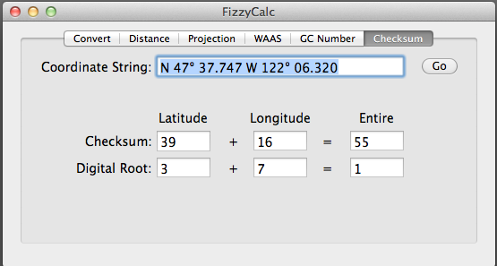

Checksum provides some simple math help for puzzles by adding up the numbers in the specified coordinate. A digital root is also available - this calculation is based on summing up the numbers until all one digit remains.

For example, in the coordinates above, the north latitude checksum is 42 (4+7+3+7+7+7+7).
The digital root keeps adding the numbers until a single digit remains. For example, using the checksum values 42 and 13, 4+2 = 6, 1+3 = 4. Adding 6+4 = 10, but since this is two digits, we add the 1 + 0 to get 1.